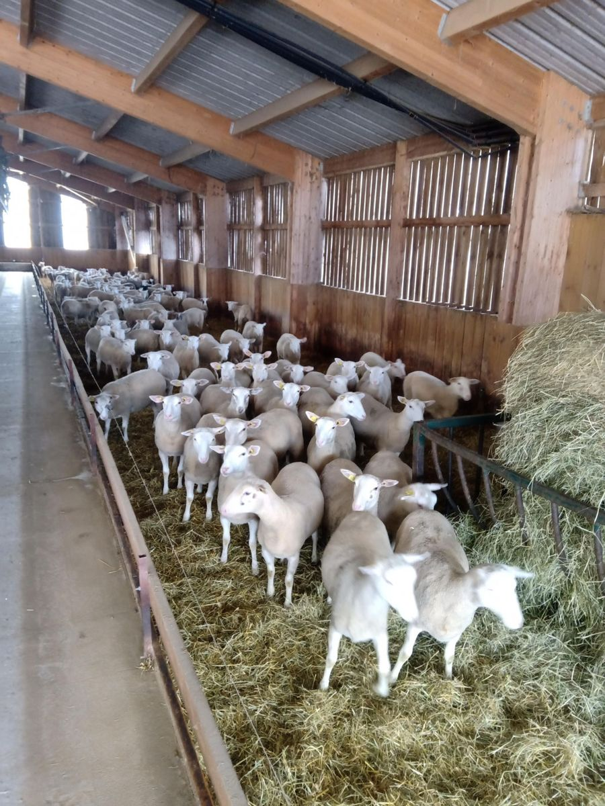
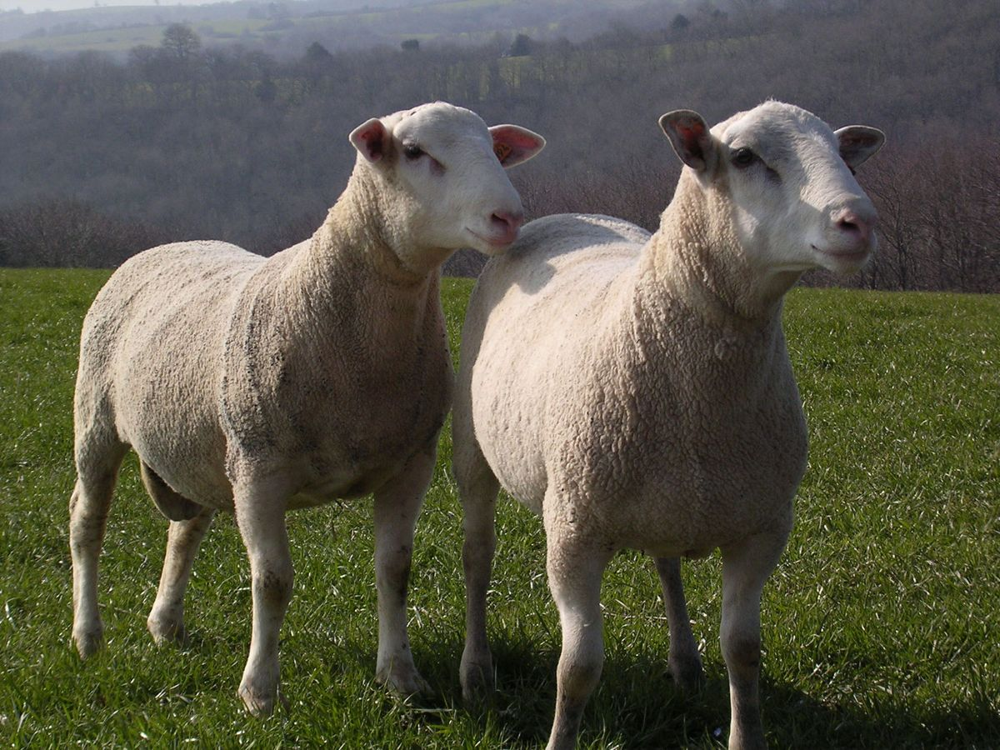
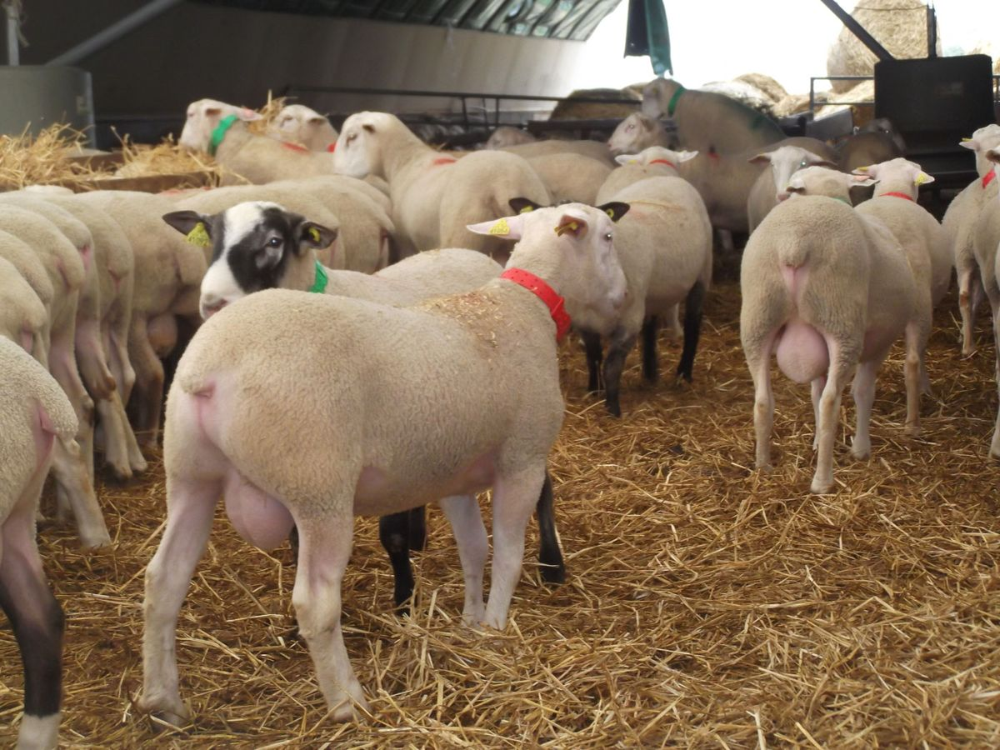

Acheter des reproducteurs
Agnelles, béliers et insémination
Trouver un éleveur près de chez vous
Cliquez sur la carte de France pour voir les éleveurs de brebis Romane par région.
Ouvrir la carte des éleveurs

Les agnelles
Nous proposons des agnelles issues de brebis inscrites et de béliers provenant de nos stations de contrôle. Elles viennent d'élevages sélectionneurs ou multiplicateurs, répartis sur toute la France.
L'achat d'agnelles peut se faire dans différents contextes :
- simplification du système, avec achat de renouvellement et croisement terminal pour les agneaux destinés à la boucherie ;
- avoir une troupe dessaisonnée pour produire des agneaux en contre-saison ;
- augmentation de troupeau, ou création d'un nouvel atelier.
Contactez-nous pour étudier votre projet et trouver des agnelles qui correspondront à vos besoins, aux périodes les plus favorables pour vous.
Les béliers
Chaque année, près de 350 béliers Romane sont vendus. Ils sont issus à 100 % de SCI (stations de contrôle individuel), dans l'Aude ou dans le Cher.
Les deux périodes de sortie des béliers sont début mars et fin mai.
Contactez-nous pour réserver vos reproducteurs Romane et assurer le renouvellement de votre troupeau.
Plus de détails sur les stations de contrôle
Séduit par le croisement terminal ? N'hésitez pas à contacter les OS de races bouchères pour acheter des béliers de qualité, qui amélioreront la conformation de vos agneaux et la qualité des carcasses.


L'insémination animale (IA)
Le centre d'insémination, situé à Verdilly dans l'Aisne, peut fournir des doses d'insémination toute l'année, dans toute la France. En frais ou en congelé, en paternité ou en mélange.
Contactez-nous si vous souhaitez avoir recours à l'IA pour améliorer les performances de votre troupeau.